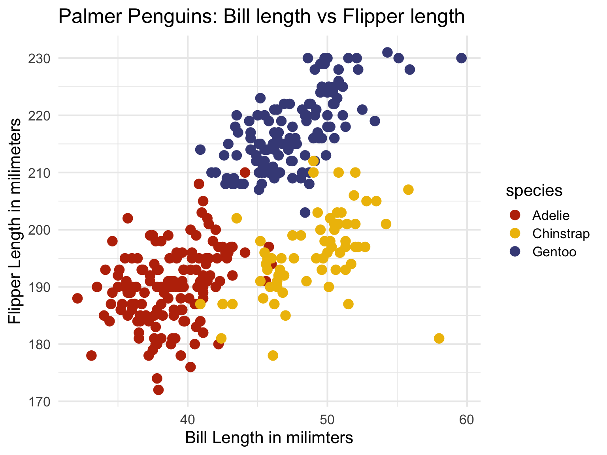
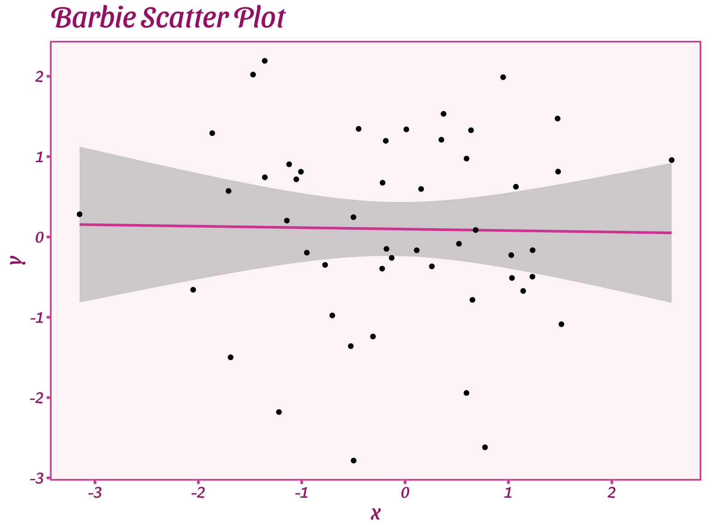

Probablity Distributions and Visualization
Princeton University
2023-08-17
What is probability theory?
Probability is the study of random processes
Probability is used to characterize uncertainty/randomness


Illustration
Random variables are translations of outcomes of a random process into numbers
Formally, a random variable is defined as a function that maps the sample space \(\Omega\) of a random generative process into the real line (or into real numbers)

Discrete random variables: Definition
Discrete random variables are defined on a range that is a countable set
i.e., they can only take on a finite or countably infinite number of different values

Continuous random variables: Definition
- A continuous random variable is a variable that can take on an infinite number of values within a given range or interval
Probablity Density Function (PDF): Definition
- Continuous random variables
The PDF of a random variable is the function \(F\) such that \(F(x) = P(a \geq X \geq b)\)
PDF tells us the probability of range of outcomes
What is probability of observing IQ between 100 and 125?

CDF
Is IQ less than or equal given value?


DGP
Bottom-up: This approach begins with the observed data. By examining the data distribution, one might make educated guesses or inferences about the underlying processes that produced it
Top-down: This approach relies on pre-existing knowledge or theories about the system or phenomenon in question to inform our understanding of the DGP

Sampling in R

Randomness
Probability is used to characterize uncertainty/randomness
shuffle


ggplot2

ggplot2
Let’s start with a blank canvas

ggplot2 - Data
ggplot2 - Themes
- Lots of customization!


library(MetBrewer)
#| code-line-numbers: "6"
#| fig-align: center
ggplot(data=penguins, mapping = aes(x=bill_length_mm, y = flipper_length_mm, color=species)) +
geom_point(size = 4) +
xlab("Bill Length in milimters") +
ylab("Flipper Length in milimeters") +
ggtitle("Palmer Penguins: Bill length vs Flipper length") + # Changes legend title, and selects a colour-palette
scale_colour_manual(
values = MetBrewer::met.brewer("VanGogh2",3)) +
theme_minimal(base_size = 16)
ggplot2 - Themes

library("ThemePark")
`X variable` <- rnorm(50, 0, 1)
`Y variable` <- rnorm(50, 0, 1)
ggplot(data = data.frame(x = `X variable`, y = `Y variable`), aes(x = x, y = y)) +
geom_smooth(method = 'lm', color = barbie_theme_colors["medium"]) +
geom_point() +
labs(title = 'Barbie Scatter Plot') +
theme_barbie()
Disclaimer
- More information is always better!
- Avoid visualizing single numbers when you have a whole distribution of numbers

Density plots: Kernels and bandwidths
Different options for calculus change the plot shape
Kernels - Smooth data points
bandwidth - how wide

Five number summary

Quantitative variables
- Scatter plots